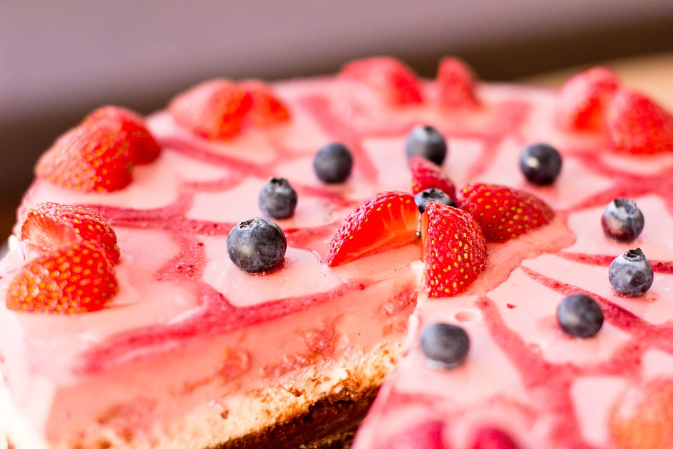
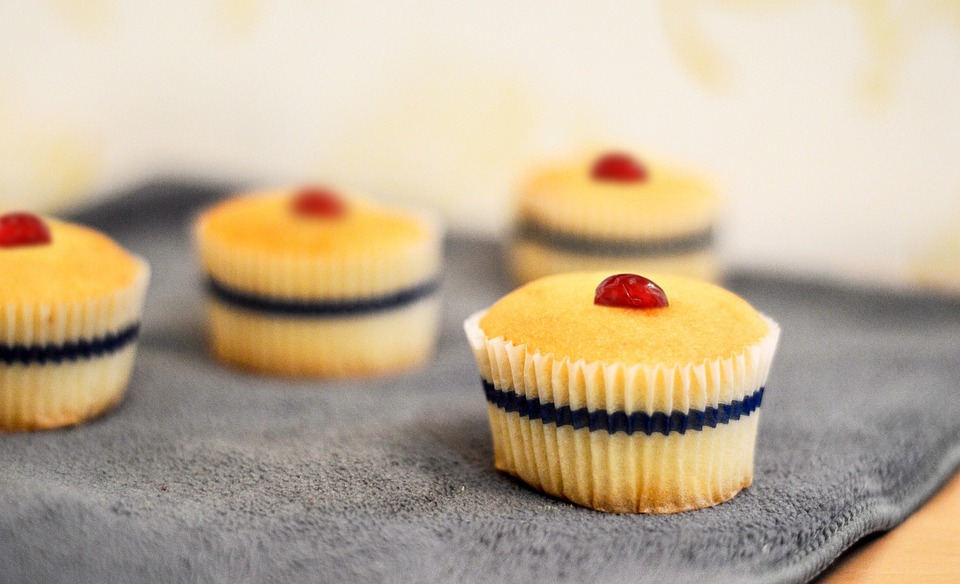
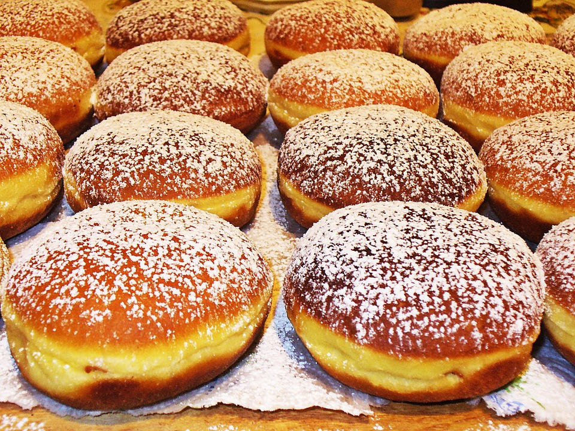
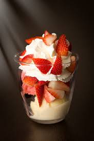

Bakelser och Drycker
Här nedanför kommer du kunna se vad serveras här på Nikos kakor tillsammans med bilder på hur dessa dryckor och bakelser ser ut, detta är för att ni som kunder ska kunna se vad ni kan köpa här hos Nikos kakor
Bakelser
Jordgubb och blåbärstårta

Kannelbullar

Chokladtårta

Choklad och jordgubbstårta

Muffins

Vaniljmunkar

Pannacotta med jordgubbar

Drycker